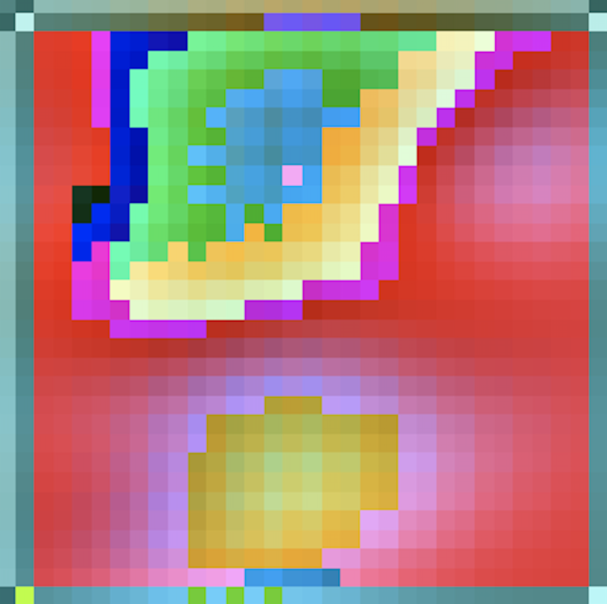
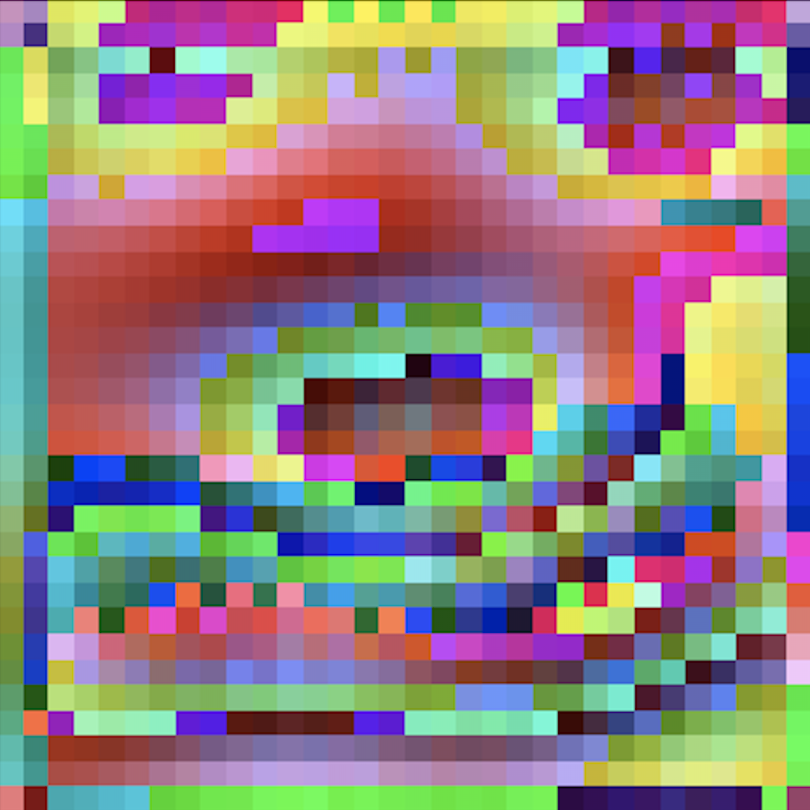
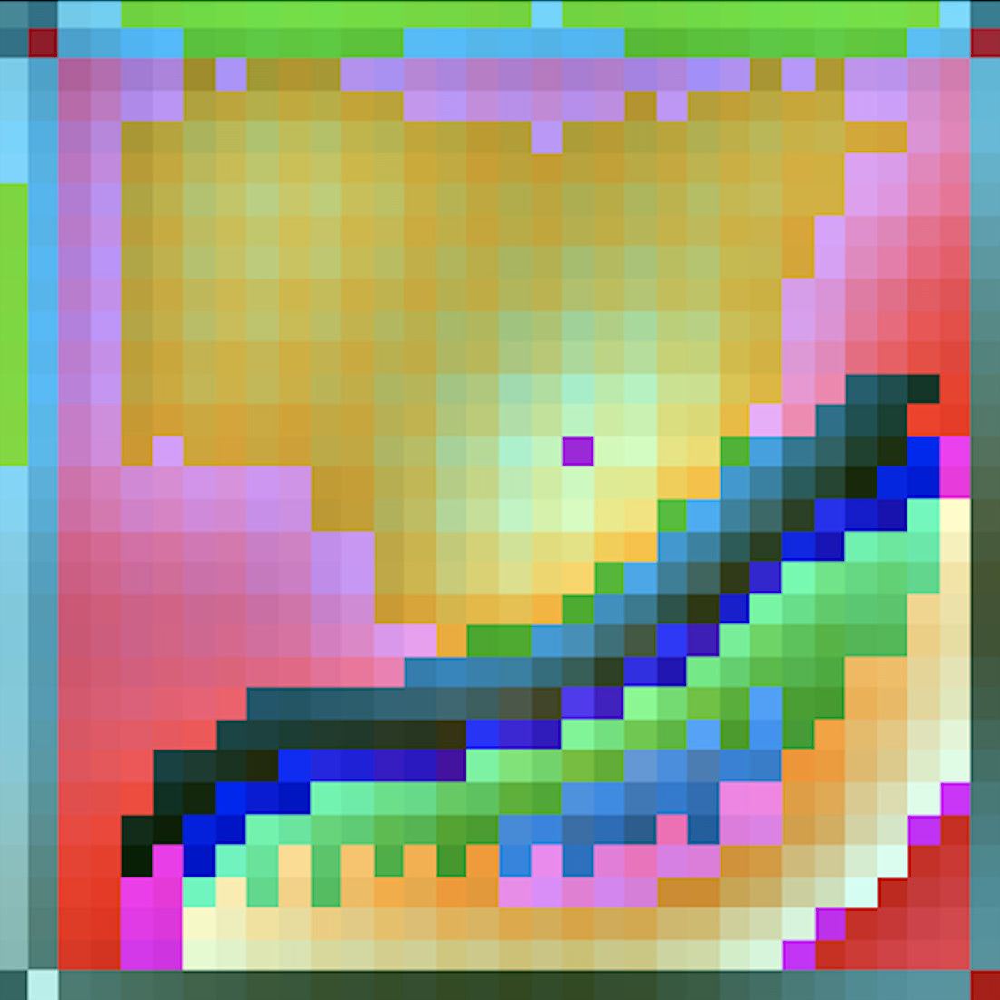
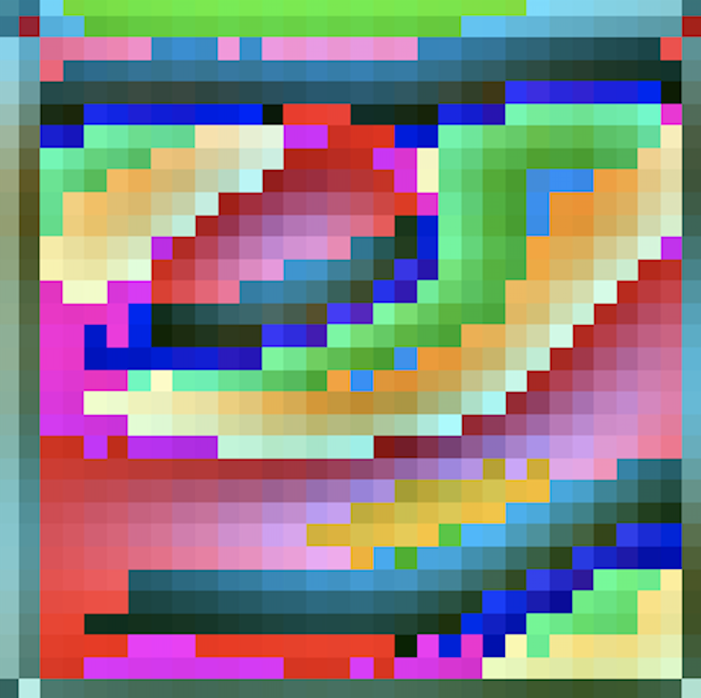
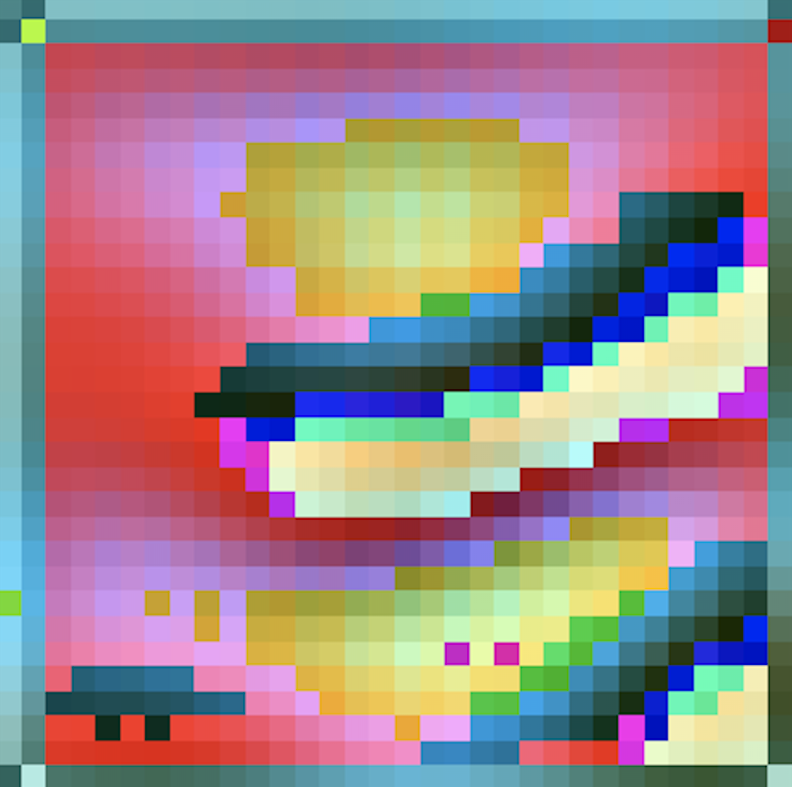
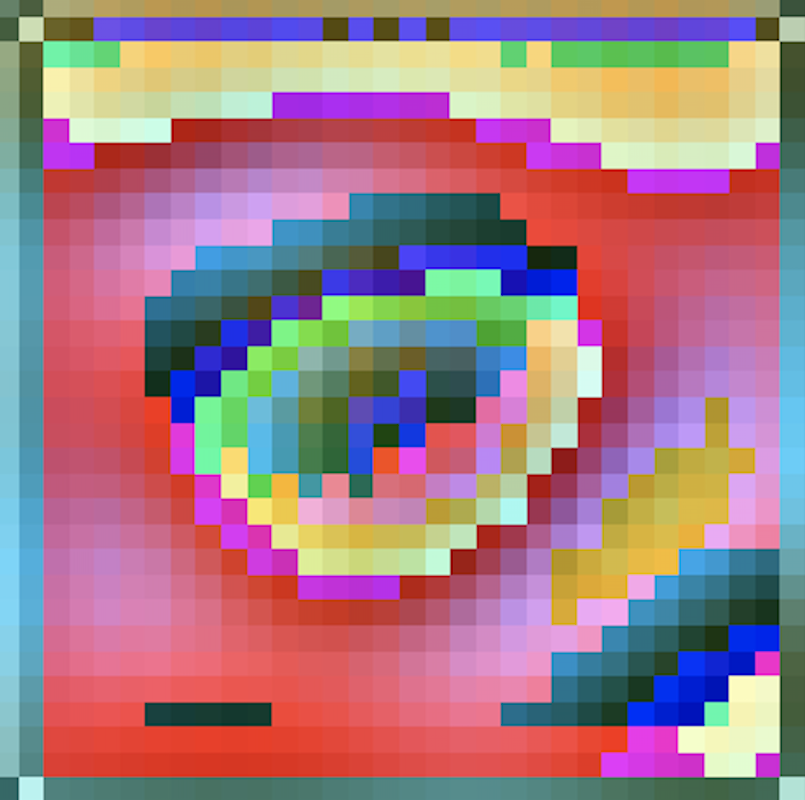
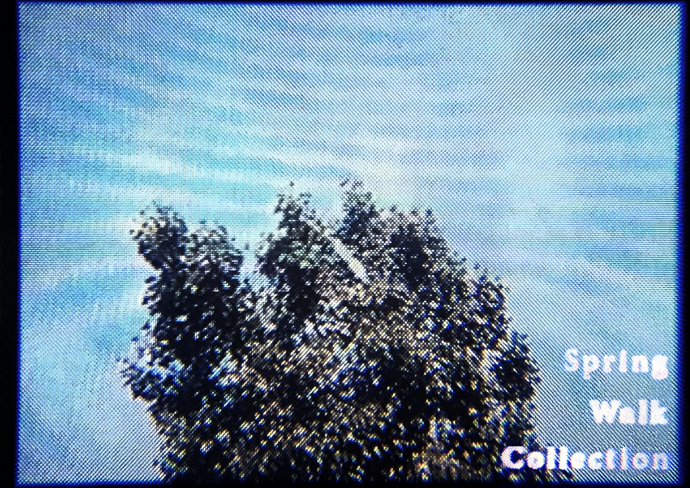
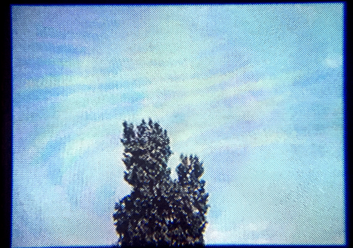

This portfolio documents my explorations on technology-driven production of design and music.
Central to this approach is the application of mathematical models approximating biological systems, and machine learning methods.
The eventual goal is enriching our digital lives with nature's complexity, and criticality.